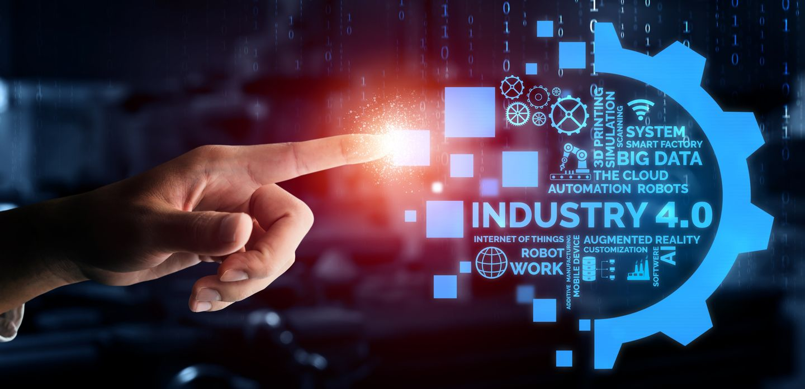

Revolusi Industri 4.0
Revolusi industri 4.0 yang terjadi pada awal abad ke-21 merupakan sebuah revolusi dimana manusia telah menemukan pola baru dengan adanya kemajuan teknologi yang terjadi begitu cepat sehingga mengancam berbagai perusahaan yang lebih konvensional. Dengan adanya revolusi industri 4.0 ini sendiri mengubah perspektif, dimana ukuran perusahaan bukan lagi menjadi sebuah jaminan, tetapi bagaimana sebuah perusahaan dapat beradaptasi dan memiliki kelincahan merupakan sebuah kunci keberhasilan untuk mencapai tujuan serta prestasi yang ada. Berbagai teknologi baru yang tadinya tidak pernah terpikirkan pun bermunculan, seperti layanan ojek online, pembayaran melalui gadget, hingga warung digital yang bermunculan di tengah revolusi industri yang ada saat ini. Revolusi industri keempat atau yang juga sering disingkat dengan RI 4.0 merupakan puncak dari revolusi industri dimana terlahirnya teknologi digital yang berdampat masif terhadap hidup manusia di seluruh dunia, seperti halnya yang dibahas pada buku Teknologi Informasi Dan Komputer Di Era Revolusi Industri 4. Pada era ini, setiap orang dituntut untuk memahami teknologi serta menggunakannya dan mengimplementasikannya ke kehidupan sehari-hari agar dapat bersaing dengan segala otomasi yang ada di era ini.
Ciri-Ciri Revolusi Industri 4.0
1. Internet of Things (IoT)
2. Kecerdasan buatan (AI)
3. Kendaraan otonom dan robotika
Dampak Revolusi Industri 4.0
1. Transformasi pekerjaan
2. Peningkatan produktivitas
3. Perubahan sosial
Contoh Revolusi Industri 4.0
1. Smartphone
2. Kendaraan otonom
3. Pabrik pintar